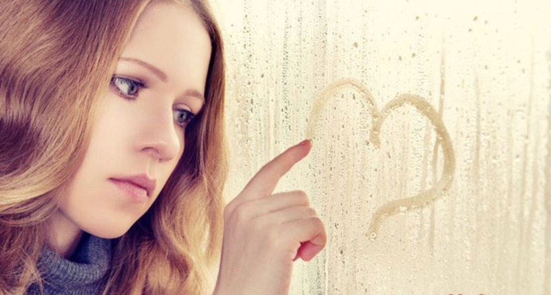

Почему мы влюбляемся в тех, кому мы не нужны?
В определенном возрасте человек задается вопросом, почему мы любим тех, кто нас не любит. Неприятное безответное чувство знакомо многим. У подростков такая ситуация считается нормальной. Но если человек год за годом наступает на одни и те же грабли, то, наверное, ему стоит задуматься: а что я делаю не так?
Что нам дает безответная любовь?
«Нам» - то бишь людям, ведь наша психика устроена примерно одинакова, приблизительно по одному образцу возникают причинно-следственные связи, которые берут свое начало в детстве.
Но чтобы понять их, необходимо почаще выныривать из бессознательного состояния – того, в котором многие поступки происходят на автомате. Это только кажется, что мы можем, не особо задумываясь, пожарить яичницу или гулять по улице. Многие люди в таком состоянии проводят большую часть жизни: все как-то движется по накатанной, а углубляться в смысл происходящего – да ну, от этого только настроение портится.
Именно в таком «полуавтоматическом» состоянии человеку кажется, что он от неразделенной любви страдает. Но в реальности же он испытывает удовольствие от своих переживаний. Если бы его не было, то этот процесс быстро закончился. А так люди с укоренившейся привычкой и зависимостью от страданий постоянно выбирают себе труднодостижимые объекты привязанности: тех, кто в браке, не соответствует статусу и т.д. Вообще чем дальше человек – тем ярче эмоции.
Живущий в таком контексте человек не хочет, а боится встретиться с партнером, который ответит взаимностью. Это происходит из-за низкой самооценки. «Достоин ли я быть любимым?» - вот главный вопрос. Пока удовольствие берется из страданий, ответ на него будет отрицательным.
Влюбиться без ответа в детском или подростковом возрасте – нормальная история. В этот период мы только-только узнаем себя и окружающих. Более того, это состояние помогает лучше разобраться в себе и дает наглядное представление о том, что не каждое твое желание может быть удовлетворено. Прожитая и верно оцененная неразделенная любовь – это важный шаг к взрослению.
Конечно, можно испытать безответное чувство и в 30-40-50 лет. Никто не застрахован от того, чтобы, к примеру, влюбиться в женатого мужчину или женщину. В этом случае надо принимать во внимание два фактора: 1) как мы справимся с этим чувством; 2) это уже какая по счету неразделенная любовь за последнее время?
Если у человека появится осознание, что в этом состоянии ему будет плохо, оно нарушит его образ жизни и он не получит никакого удовольствия от удаленности объекта, то такое увлечение быстро забудется.
Если же он вновь с радостью (но с печатью страданий на лице) бросится в этот омут с головой, то, возможно, это на всю жизнь. Пока человек сам не захочет изменить свою модель поведения.
Почему нас тянет к тем, кто нас отвергает
Психологи отмечают, что тяга к объекту, который тебя отталкивает, отвергает, закладывается в детстве. Скорее всего, именно так с человеком поступали его родители. Многие могут заявить: «Достали вы со своим детством, тулите нам одно и то же, эти психологические заскоки – полная чушь». Теоретически такое может быть, но практика доказывает, что 99,9% наших привычек родом именно оттуда.
Как все происходит? Чаще всего спусковым механизмом является родительский шок: завести ребенка – это тяжелейшая работа. Считай, что ты каждый день сдаешь экзамен на ответственность и эмоциональную зрелость.
Если мама малыша не справляется с такой нагрузкой, постепенно возникают побочные явления. В такой ситуации ее сил и тепла хватает только на то, чтобы поддерживать себя. Ребенок остается эмоционально голодным: ему уделяется мало внимания, его игнорируют.
При отсутствии материнского тепла он превращается в эскимоса, для которого холод – естественная среда обитания. На бессознательном уровне зарождается следующая программа: «Если я буду хорошим, послушным, терпеливым, то мне достанется немножко любви».
И далее по жизни такой человек выбирает себе «айсберги», которые нужно растопить. Он не знает, что для любви достаточно просто существовать, быть, жить. Для него получить ответное чувство – это битва. А каждый новый объект – надежда на чудо: «Вдруг сейчас получится? Вдруг я растоплю?»
Но – ничего не меняется. Более того, если «айсберг» растает, человек может на мгновение ощутить радость, но затем ему станет скучно. Не будет прежних ощущений: искры, страданий, заламывания рук, бессонных ночей, сексуальной жажды.
Поставить точку в мазохистском сценарии сложно. Для этого нужно желание изменить ситуацию и кропотливая работа над собой. Механически это происходит так: нужно почувствовать абсолютную, накрывающую с головой пустоту фрустрирующих отношений, обогнуть очередной «айсберг» и перенаправить энергию на более гармоничный объект, с которым можно создать крепкие отношения.
На такую работу способен не каждый: она может занять много лет, да и ценник у нее не самый низкий. Зато результат...
В избавлении от мазохистского механизма есть один подвох. Если все мы научимся любить и быть любимыми, то огромная часть мирового кинематографа, литературы и музыки перестанет нам быть интересна.